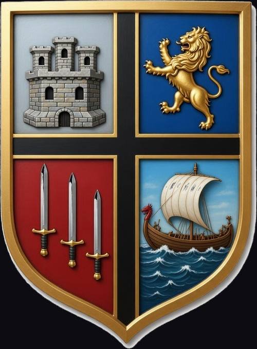
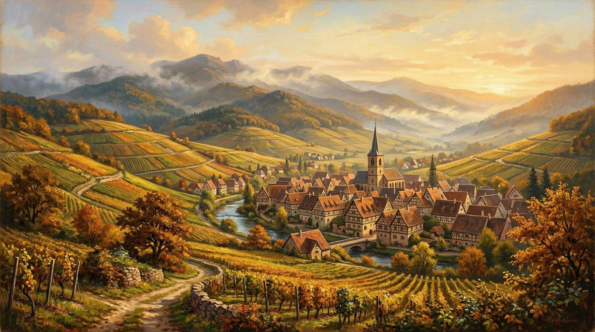
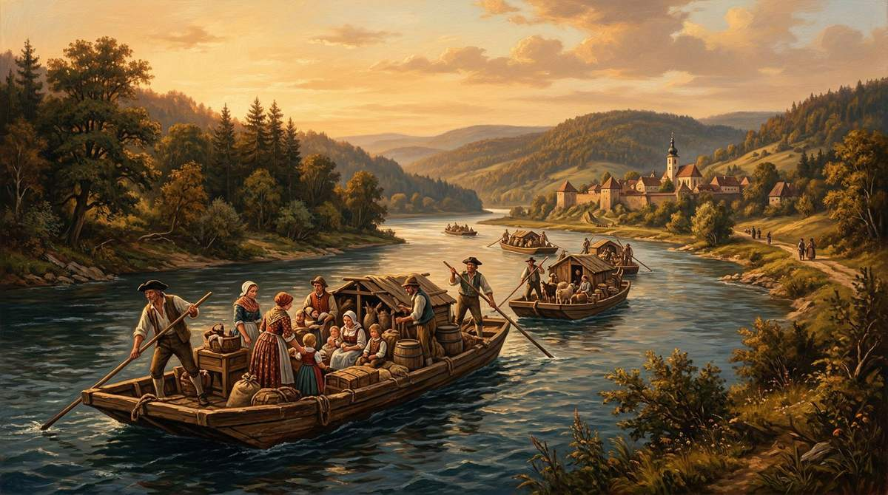
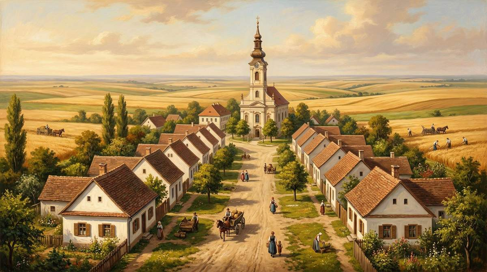

Zenar
A Family Heritage Across Centuries
The Zenar name carries a rich history stretching from medieval German-speaking lands, through the contested borderlands of Alsace-Lorraine, across the Danube to the Banat region of Serbia, and eventually to the wider world.
The first found death, the second want, only the third bread.— Traditional Danube Swabian settlers' saying
"Die Ersten fanden den Tod, die Zweiten die Not, die Dritten erst Brot"
Etymology
The Zenar Surname
Zenar is an Americanized form of the German surname Zehner. In Serbian records, the form Ženar appears, reflecting Slavic phonetic adaptation where Ž represents a voiced fricative sound. Related variants include Zehnder, Zentner, Zehntner, Zenor, and Zener.
The Evolution
A Steward's Legacy
The name derives from Middle High German zehendære — from zehende ("tenth part"), from Old High German zehanto, from zehan ("ten"). It was a title of responsibility: the Zehendære was a trusted steward appointed to oversee the collection and fair distribution of the tithe — the tenth part of agricultural produce — on behalf of the local lord or the church. The role required literacy, integrity, and standing in the community, and was often held by men of minor nobility or those granted authority by the ruling house.
First Historical Records
- 1265 — Heinrich Zehender of Bühl
- 1380 — Maertl der Zehentner of Tyrol
- 1409 — Lucz Zehender of Würzburg, Franconia
- 1498 — Johan Zener (Zehender) of Augsburg, Bavaria
- 1880 — Zenar families present in U.S. census, concentrated in Alabama
The Zehner surname was first found in the Austrian provinces of Tyrol and Styria, regions governed by powerful feudal houses. The name reflects a lineage of trusted civic authority — families who served as stewards, administrators, and pillars of their communities across medieval Central Europe.
The Contested Borderland
Alsace-Lorraine
Alsace-Lorraine sits on the border between France and Germany, with deep roots in both cultures. This region shaped the identity of countless families, including the ancestors of the Zenar line, who would eventually join the great Swabian migrations eastward.

Centuries of Change
Under Roman control as part of Gallia Belgica from 22 BCE, the region was seized by Germanic Alemanni tribes in the 4th century CE, then defeated by the Franks in 496 CE, becoming a Frankish duchy. After the Treaty of Mersen (870), Alsace and Lorraine were ceded to the Holy Roman Empire.
France gradually absorbed the region: Louis XIII and XIV conquered Alsace in the 17th century. Alsace became a French province via the Treaty of Westphalia (1648), with full territory granted in the Treaty of Ryswick (1697).
The Franco-German Tug-of-War
- 1871 — Ceded to the German Empire after the Franco-Prussian War (Treaty of Frankfurt). Became the "Imperial Territory of Alsace-Lorraine."
- 1919 — Returned to France after WWI (Treaty of Versailles).
- 1940 — Occupied by Nazi Germany (de facto, never formally annexed).
- 1944 — Liberated and returned to France permanently.
Cultural Identity
Most of the population spoke Alemannic German dialects. A unique blend of French and German traditions persists to this day. Some French-speaking families from Lorraine maintained the French language for generations even after migrating to the Banat — a dialect known as "Banat French" (Français du Banat).
The Emigration
During the 18th century, economic hardship and religious conflict drove many families from Alsace-Lorraine, the Palatinate, Baden, and other southwestern German territories to seek new opportunities. Habsburg agents recruited settlers for the depopulated Banat region. Over 200,000 people migrated from the Rhineland, Palatinate, Bavaria, and Alsace-Lorraine to the Banat and Transylvania.
Danube Swabians
The Great Migration
The Danube Swabians were German-speaking settlers who colonized the Kingdom of Hungary's Danube valley, primarily in the 17th and 18th centuries. Called "Swabians" because most registered and embarked from the Swabian city of Ulm, they actually came from many regions: Upper Swabia, the Swabian Jura, Black Forest, Alsace-Lorraine, Hesse, Bavaria, Franconia, and the Palatinate.

Why the Banat?
After the Ottoman Empire was expelled from the Banat (Treaty of Passarowitz, 1718), the region was devastated and depopulated. Prince Eugene of Savoy captured the Banat; it became a Habsburg crown territory administered from Vienna. The Habsburgs wanted to repopulate and develop agricultural land, create a Catholic buffer zone, and secure the southern frontier.
The Three Schwabenzüge
The Journey
Settlers traveled in boats called Ulmer Schachteln (Ulm barges) down the Danube. The route ran from Ulm to Vienna for registration, then on to Budapest, Belgrade, and finally to Banat villages on foot. Between 1686 and 1829, an estimated 150,000 German settlers emigrated to Hungary, and between 1711 and 1750, about 800 villages were founded by German settlers.
The Breadbasket of Europe
Through generations of hard work, the Banat became one of the most productive agricultural regions in Europe — known as the "breadbasket of Europe." Ethnic Germans maintained their language, customs, and dialect across the centuries. Most Danube Swabian communities were Roman Catholic, though the family's own religious history beyond three generations ago is not known.
The first found death, the second want, only the third bread.— Traditional Danube Swabian settlers' saying
"Die Ersten fanden den Tod, die Zweiten die Not, die Dritten erst Brot"
The Ženar Connection
Serbia & Vojvodina
The Serbian Banat, part of Vojvodina, was home to significant ethnic German communities for over 200 years. It was a multi-ethnic region where Germans, Serbs, Romanians, Hungarians, Croats, and Slovaks lived side by side. German communities maintained their own schools, churches, and cultural institutions.

The Ženar Name in Serbia
The surname Ženar in Serbia represents a localized phonetic adaptation of the German Zehner. The Ž (a voiced fricative) reflects Slavic pronunciation patterns applied to the original German name. The name is documented in cultural and artistic contexts — a Banat painter named Ženar appears in historical accounts of Vojvodina's art scene.
Serbian naming customs, standardized in the mid-19th century, typically feature patronymic -ić suffixes, but non-Slavic surnames from minority groups often retained original forms or underwent only minor modifications.
The Alsace-Lorraine Connection
The family's believed origin in Alsace-Lorraine aligns perfectly with documented migration patterns. Alsace-Lorraine was one of the primary source regions for Banat settlers during all three Schwabenzüge. Settlers from Lorraine formed some of the largest contingents despite French government emigration bans.
Post-WWI Changes
After the Treaties of Saint-Germain (1919) and Trianon (1920), the Banat was divided between Romania, Yugoslavia, and Hungary. Ethnic Germans found themselves citizens of new nations. Economic pressures and cultural assimilation began to erode traditional German communities. Some Banat Swabians began emigrating to Bulgaria, the Americas, and elsewhere from the 1890s onward.
A Dark Chapter
WWII & Aftermath
In 1941, Yugoslavia was invaded and occupied by Nazi Germany. In the German-occupied Banat, ethnic Germans were granted superior status. Danube Swabians were under heavy Nazi influence; some served as a fifth column during the invasion. Yugoslav Danube Swabians supplied over 60,000 troops for German military formations — some voluntarily, many under duress — including service in the 7th SS Volunteer Mountain Division "Prinz Eugen."
The AVNOJ Decrees
November 21, 1944
The Presidium of AVNOJ (the Yugoslav parliament) declared the ethnic German minority collectively hostile to the Yugoslav state. All property of persons of ethnic German nationality was confiscated. The decree acquired force of law on February 6, 1945. Approximately 200,000 Danube Swabians who remained became "outlaws" — stripped of citizenship and all rights.
The Camps
Those who could work were sent to slave labor camps. Old, young, and infirm were sent to starvation camps: Gakovo, Kruševlje, Rudolfsgnad, Molidorf, Bački Jarak, Sremska Mitrovica, Krndija, and Valpovo.
Over 35,000 children under 16 were separated from parents and sent to re-education orphanages. Siblings were separated and given Slavic names. Of the women deported to Soviet Union labor camps at Kriwoi Rog and Stalino to work in coal mines, 16% died.
The Diaspora
Of a pre-war population of approximately 350,000 ethnic Germans in Vojvodina, the 1958 census revealed only 32,000 remained. Half of the Danube Swabians — some 275,000 — had fled with the retreating German army. Survivors emigrated to Germany, Austria, the United States, Canada, Brazil, Argentina, and Australia. Some French-speaking families from Lorraine were resettled in France around 1950.
Austrian historian Arnold Suppan considers the destruction of the Danube Swabians to be genocide. In 2017, Serbia unveiled its first memorial to Germans expelled after WWII.
Heraldry
The Zenar Family Crest
The crest is rendered as an embossed metallic shield, divided into four quadrants by a black cross with a gold border. Each element carries deep heraldic significance reflecting the family's journey and values. In living memory, the Zenar family has been Serbian Orthodox, with St. Michael the Archangel as patron saint.
The Four Quadrants
Castle on Silver
The stone castle represents security, protection, home, and stronghold. In heraldry, castles signify "safety in times of adversity" and a defender of the faith. It may reference the fortified Banat settlements or the walled cities of Alsace-Lorraine. Argent (silver) symbolizes peace, sincerity, and purity — a color of wisdom and innocence.
Lion Rampant on Blue
The lion rampant — the most common charge in heraldry — symbolizes courage, nobility, royalty, strength, stateliness, and valour. The gold (Or) coloring adds significance of generosity and elevation of the mind. Azure (blue) symbolizes truth, loyalty, and strength — one of the most noble heraldic colors.
Three Swords on Red
Three swords represent military honor, justice, and the defense of righteousness. Multiple swords can indicate multiple battles or campaigns. The upright positioning suggests readiness and vigilance. Gules (red) symbolizes warrior, military strength, and magnanimity — a color of action and martyrdom.
Dragon Ship on Blue Seas
The ship with its red dragon-headed prow represents a journey, exploration, and seafaring strength. In the Zenar context, this likely references the historic Danube journey — the Ulmer Schachteln barges that carried settlers down the Danube from Ulm to the Banat. The dragon figurehead adds a note of fierceness and protection. Azure again represents loyalty and the waters of the Danube.
The Embossed Shield Style
The crest is rendered as an embossed metallic shield, with a bold black cross dividing the four quadrants and a gold border framing the composition. This three-dimensional style evokes the carved and gilded shields of European heraldic tradition. While most Danube Swabian settlers were Roman Catholic, the Zenar family's religious history beyond three generations is not known — in living memory, the family has been Serbian Orthodox, with St. Michael the Archangel as patron saint. The craftsmanship reflects enduring traditions passed down through generations of Zenar ancestors.
Opportunities
Job Board
Current openings in Stamford CT and Jay Peak VT areas.
Updated: —